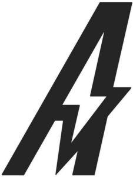

Trade Mark Journal No.2025/026 27 June 2025
WO0000001858937 (6,7,8,9,11,12,16,21,22,25)
Office of origin: United States of America
Date of International Registration:13 March 2025
Date of designation in the UK:
13 March 2025

The mark consists of a lightning bolt design incorporated into the lines of the letter "A".
- Class 6
- Metal bicycle locks; bike keys made of metal.
- Class 7
- Portable high pressure washers; portable air compressors.
- Class 8
- Hand-operated socket wrenches.
- Class 9
- Bicycle helmets; components for electric bicycles, namely, electric wiring harnesses for electric bikes, cadence sensors, battery controllers, electronic data display interfaces for use with electric bicycles, throttle tuners being electronic controls for electric bicycles; battery chargers for electric bikes; display covers in the nature of protective display screen covers adapted for use with electric bicycle displays.
- Class 11
- Bicycle lights; electric coolers; electric lantern LED lights in the nature of electric lanterns.
- Class 12
- Electrically-powered motor scooters; electric bicycles; components for bicycles, namely, kickstands, bicycle seat posts, bicycle pedals, derailleur hangers, forks, spokes, handlebars, saddles, handlebar grips, bicycle seat post clamps; bike accessories, namely, bicycle rear racks, bicycle front racks, bicycle bumpers, bicycle fenders; bicycle bells; tire pumps; electric motors for bicycles; electric hub motors for bicycles; electric mid-drive motors for bicycles; tires; inner tubes; bicycle racks for vehicles; bicycle trailers; baskets adapted for bicycles; rearview mirrors.
- Class 16
- Stickers.
- Class 21
- Water bottles sold empty.
- Class 22
- Foldable tents.
- Class 25
- Shirts, hats, beanies.
Ride Aventon Inc.
Representative: Laura J. Winston Offit Kurman, P.A., 590 Madison Ave., 6th Floor, New York NY 10022, UNITED STATES OF AMERICA